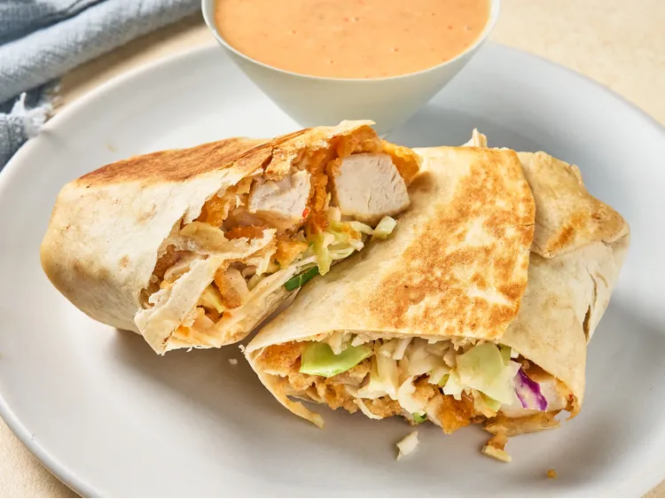

Bang Bang Burrito
Home
Description
These quick and easy bang bang burritos feature breaded chicken strips, coleslaw mix, and a spicy 3-ingredient bang bang sauce. Wrapped in a flour tortilla and pan fried, they're hot, golden, and crunchy.
Ingredients
- 1/2 cup mayonnaise
- 1/4 cup sweet chili sauce
- 2 tablespoons Sriracha
- 12 frozen crispy chicken strips
- 4 (10 to 12-inch) flour tortillas
- 2 cups coleslaw mix
Directions
-
Stir mayonnaise, chili sauce, and Sriracha sauce together in a small bowl until well combined and set aside.
-
Prepare chicken strips in the air fryer according to package directions and cut into bite-sized pieces.
-
Toss chicken with bang bang sauce until evenly coated. Divide chicken mixture among tortillas and place just below the center of each tortilla.
-
Top evenly with slaw mix. Fold the sides slightly over the filling and roll the tortilla up from the bottom.
-
Working in two batches if necessary, heat butter in a large nonstick skillet over medium-high heat until melted. Place burritos, seam side down, in hot skillet and cook until toasted golden brown, about 2 minutes. Flip and cook the other side until golden brown and toasted, about 2 minutes more.
